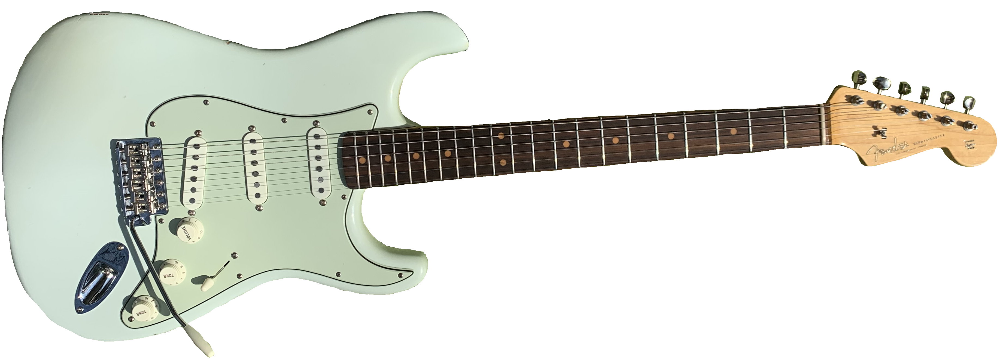
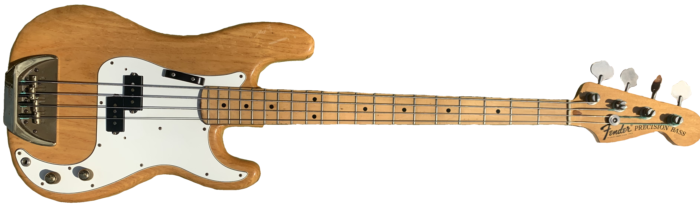

Ian's Instruments
Welcome to Ian's Instruments!
This website provides the ability to play some of the instruments that my little brother owns. The instruments currently implemented are: acoustic guitar, electric guitar, and bass guitar. If you want more information on what instruments are available and how to play them, head over to the Instruments Overview page here. If you have any questions about the instruments themselves or this website, visit the About page here.
Instruments
Below are some of the instruments you can play on this website.
-

- 
- 